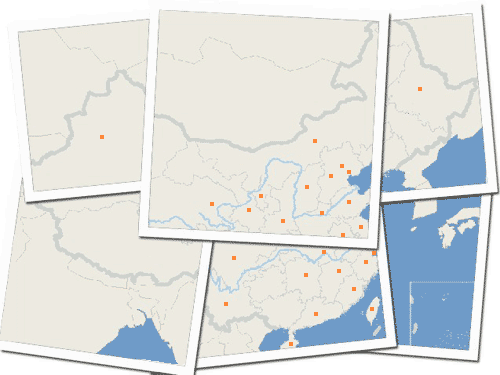

首页
|
博客
|
游记
|
相册
|
音乐
|
电影
|
点评

生在彩虹旗下 -- San Francisco Pride，旧金山同性恋大游行(2010.6.28)
他们违背传统，却得到人们的祝福；他们与众不同，却能自由地表达；他们为平等呐喊，他们幸而生在彩虹旗下。
寻找春天的声音 -- 油菜花、宣纸、围屋、土楼的大合唱(2010.4.4~2010.4.16)
春暖花开、和风细雨，沐浴在春光中，我们聆听古老民居讲述久远的故事。
一半是佛光，一半是海风 -- 泰国度假小记(2010.2.8~2010.2.20)
独具魅力的宗教遗产，美不胜收的热带海滩，这两者在一个古老的国度邂逅，她的名字叫“暹罗”。
撒落在路边的秋天 -- 奇骏自驾呼伦贝尔、大兴安岭路书(2009.9.28~2009.10.8)
对于旅行来说，一年之计在于秋，再美的词汇也无法描述秋天的灿烂。
全部游记（按时间顺序）